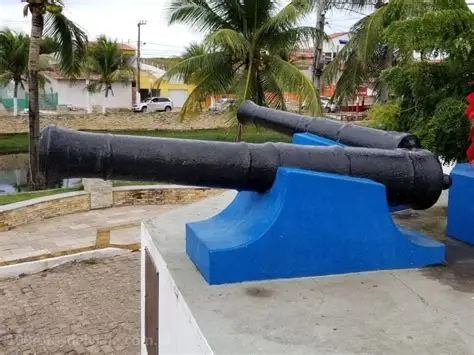

Os canhões coloniais de Touros, RN, são um importante monumento histórico que remonta ao século XIX. Eles foram colocados entre 1808 e 1812 pelo Arquiteto e Tenente à Coronel de Engenharia Antônio da Silva Paulet, responsável pela defesa da costa das capitanias, a mandado de D. João VI. A Bateria de São João de Touros, comandada pelo alferes João Gualberto, foi construída pelo tenente à coronel José Inácio Borges, governador da capitania do Rio Grande, com autorização do ministro Tomaz António de Vilanova Portugal.
Os canhões coloniais são um testemunho da resistência e bravura dos portugueses durante a colonização do Brasil e são um símbolo da história e cultura do município de Touros. Eles foram transferidos para o pedestal em 1956, onde atualmente se acham nas proximidades da matriz do município.
localização:
 Voltar ao inicio
Voltar ao inicio